Pico Mágina
2.100 mLadera norte y surCalizas
La zona más alta de las tres, junto a la cumbre del parque.
Ver en 3D en Google Earth
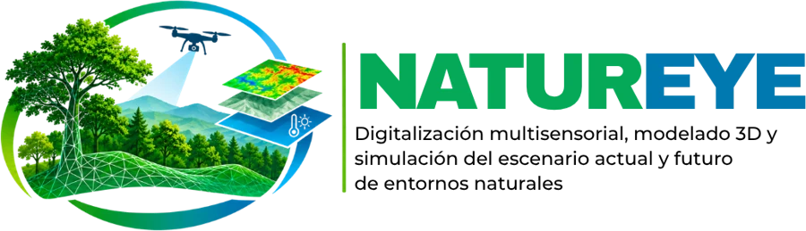
Drones, sensores y modelos 3D para conocer cómo está hoy el monte mediterráneo de Sierra Mágina y cómo podría cambiar mañana.
Proyecto PID2022-137938OA-I00 · 2023–2026
NATUREYE estudia cómo digitalizar y modelar en 3D un espacio natural a partir de datos tomados con drones y satélites, y cómo usar ese modelo para simular su evolución. El trabajo se ha hecho en el Parque Natural de Sierra Mágina (Jaén).
Se han hecho vuelos en distintas estaciones del año con sensores LiDAR, hiperespectrales, multiespectrales, térmicos y cámaras RGB, y se han añadido series de imágenes Sentinel-2 y registros meteorológicos. Toda la información se organiza en una estructura de vóxeles en la que cada celda guarda su geometría, su respuesta espectral y las variables climáticas.
Con esos datos se localiza cada árbol, se identifica su especie por su firma espectral y su forma, y se obtiene su estructura en 3D. Los métodos están integrados en GEU, la plataforma de visualización y análisis del grupo, y en un escenario de Unreal Engine que muestra cómo podría cambiar la vegetación con más temperatura y menos lluvia.
Una muestra de 700.000 puntos de la nube capturada con dron el 8 de abril de 2024: 560 × 440 metros de monte mediterráneo entre 1.600 y 1.735 metros de altitud. Arrastra para girar, usa la rueda o pellizca para acercarte.

Nube RGB densificada a partir de imágenes del DJI Mavic 3M (93,9 millones de puntos en total). La altura de la vegetación se calcula sobre un modelo del suelo obtenido de la propia nube.
La nube capturada con dron no es solo una imagen: sirve de base para construir un gemelo digital del monte. A partir de ella se genera el relieve, se colocan los individuos en su posición real y se recrea el paisaje en Unreal Engine.
Sobre ese escenario se pueden cambiar la luz, la atmósfera y el estado de la vegetación para ver cómo podría transformarse el lugar con más temperatura y menos lluvia.
El mismo rincón de Puerto de la Mata con tres ambientes distintos en Unreal Engine.
Tres zonas de unas 6 hectáreas cada una en el Parque Natural de Sierra Mágina (Jaén), a distinta altitud y orientación.
2.100 mLadera norte y surCalizas
La zona más alta de las tres, junto a la cumbre del parque.
Ver en 3D en Google Earth1.600 mLadera norte y surCalizas
Zona del vuelo de la nube 3D y del escenario de Unreal Engine.
Ver en 3D en Google Earth1.225 mLadera surCalizas
La zona más baja y oriental de las tres.
Ver en 3D en Google Earth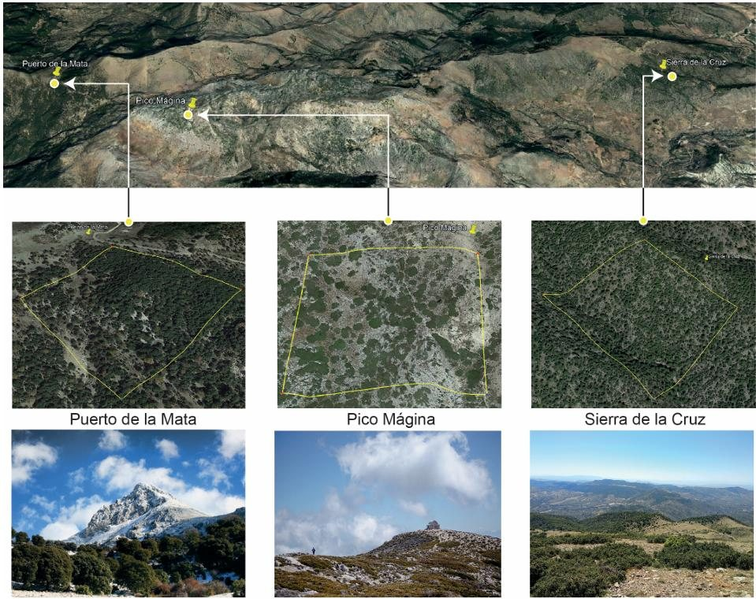
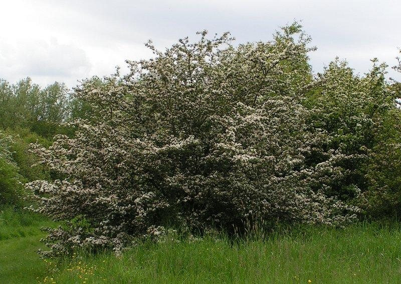

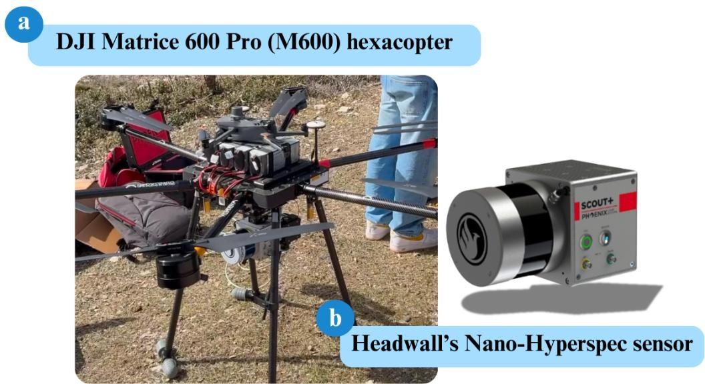
Paso 1 de 5
Vuelos en distintas estaciones con LiDAR (Phoenix Scout-Ultra), cámara hiperespectral Headwall Nano-Hyperspec (270 bandas entre 400 y 1000 nm), cámaras multiespectral, térmica y RGB. Se completan con series de imágenes Sentinel-2 y registros meteorológicos.
Paso 2 de 5
Ortorrectificación de las imágenes hiperespectrales, ortomosaicos, nubes de puntos LiDAR y modelos digitales de elevación de las tres zonas de estudio.
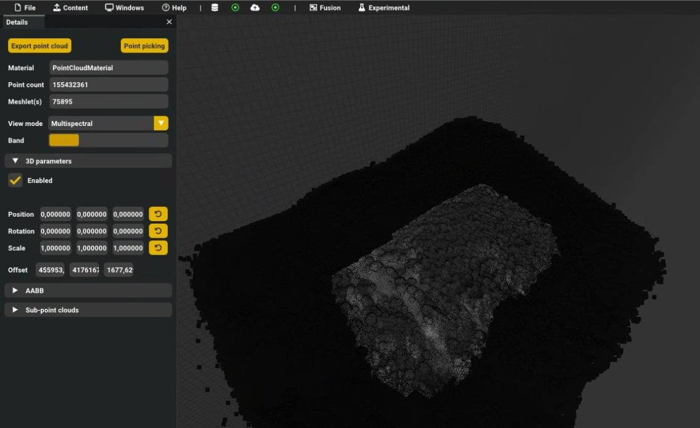
Paso 3 de 5
La información hiperespectral y multiespectral se proyecta sobre la nube de puntos y se organiza en vóxeles: cada celda guarda su geometría, su reflectancia y las variables climáticas.

Paso 4 de 5
Se filtran el suelo y las sombras, se identifica cada individuo y se clasifica por su firma espectral, afinada con la forma de la copa. Un flujo híbrido LiDAR-hiperespectral recupera las especies objetivo a partir de pocos ejemplos.
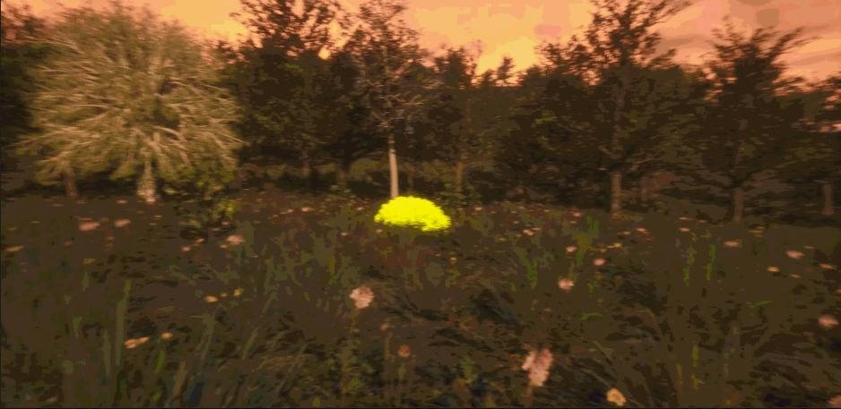
Paso 5 de 5
Con los datos reales se construye un escenario 3D en Unreal Engine para ver cómo podría cambiar la vegetación con más temperatura y menos lluvia.
Dentro del proyecto se ha desarrollado un módulo de simulación predictiva integrado en GEU. El módulo entrena modelos de distribución de especies con Random Forest y MaxEnt a partir de registros de presencia (GBIF) y variables bioclimáticas (WorldClim), y proyecta su distribución con las proyecciones climáticas CMIP6 en distintos escenarios socioeconómicos (de SSP1 a SSP5) hasta 2070 y 2100.
Se ha aplicado a Sierra Mágina (Puerto de la Mata) y, como zona de contraste, al Parque Nacional de Ordesa y Monte Perdido. Los modelos alcanzan un AUC medio de 0,88 con Random Forest y 0,87 con MaxEnt. Los resultados se ven en GEU como nubes de puntos y mapas de calor, y en TerraPredict, una aplicación web con visores 2D y 3D, comparador de escenarios y descarga de resultados.
Trabajo Fin de Grado de Alberto Jiménez Expósito, «Simulación predictiva y visualización de escenarios naturales integrando información multisensorial» (Universidad de Jaén, 2026). Dirigido por Juan Manuel Jurado Rodríguez y David Jurado Rodríguez.
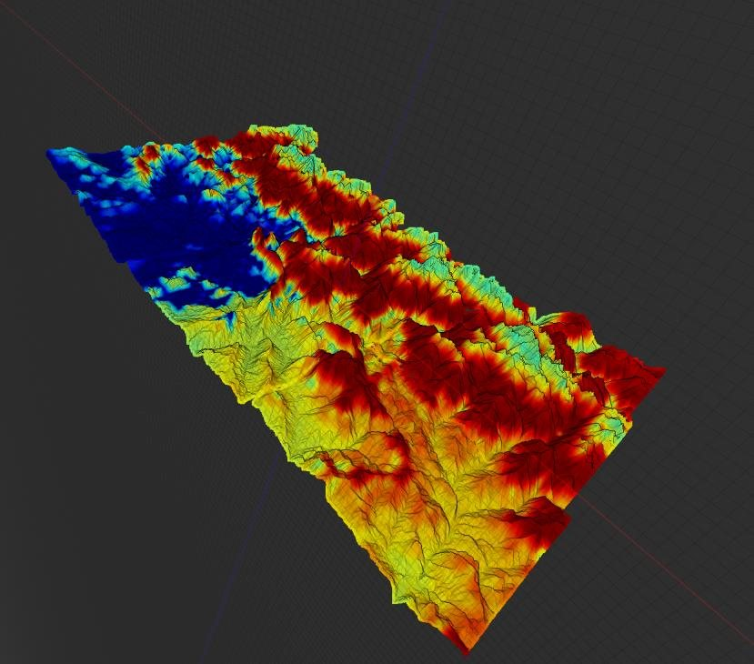


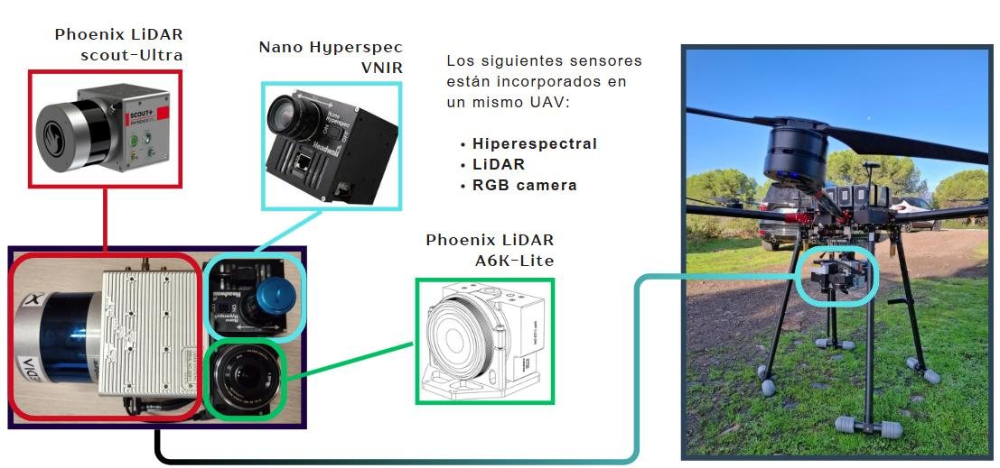
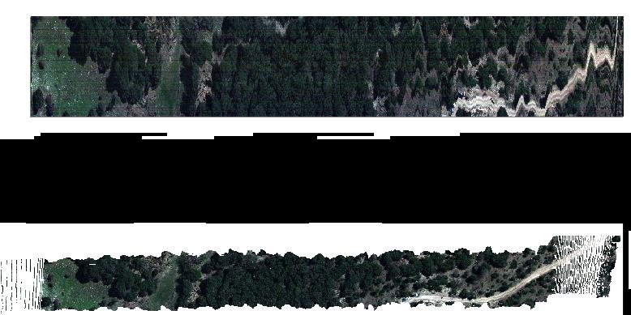
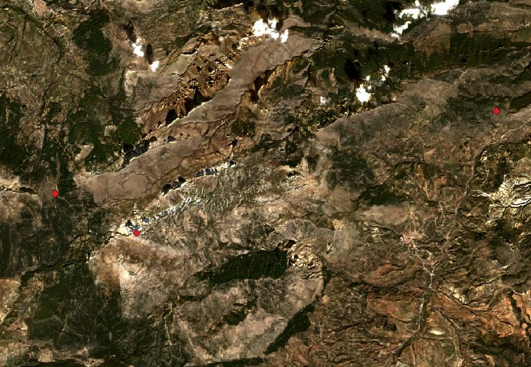

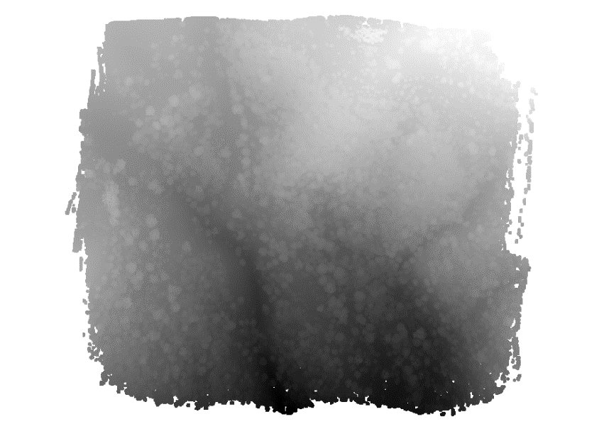
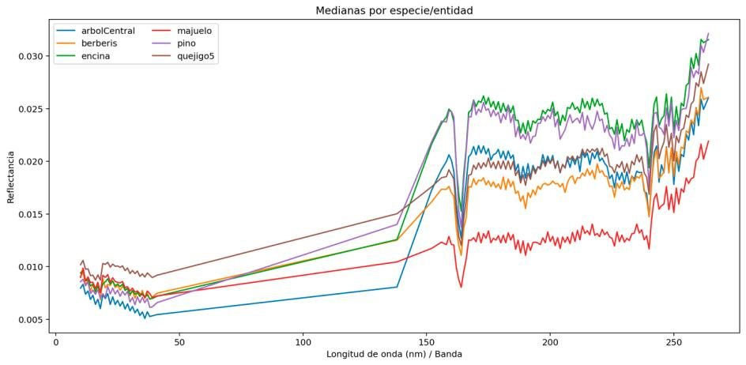

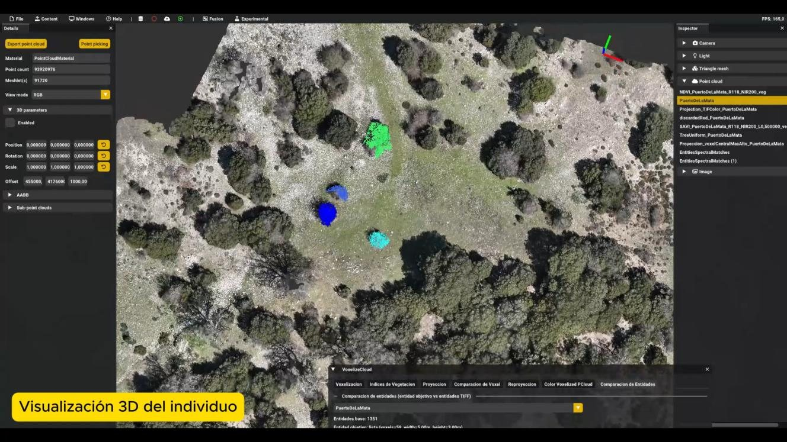

Datos generados por el proyecto en el Parque Natural de Sierra Mágina. Se publican con licencia CC BY 4.0: se pueden reutilizar citando la fuente. Los ficheros más grandes y las coordenadas exactas de especies protegidas se facilitan bajo petición.
Grupo de Informática Gráfica y Geomática, Universidad de Jaén (2026). NATUREYE: datos multisensoriales de Sierra Mágina [conjunto de datos]. Proyecto PID2022-137938OA-I00, MICIU/AEI/10.13039/501100011033 y FEDER, UE.
| Conjunto | Zona y fecha | Formato | Tamaño | Acceso |
|---|
Formatos abiertos, en ETRS89 / UTM 30N (EPSG:25830). Se leen con QGIS, CloudCompare, PDAL o GDAL. Para pedir un conjunto: inuouja@ujaen.es, indicando el nombre del conjunto y el uso previsto.